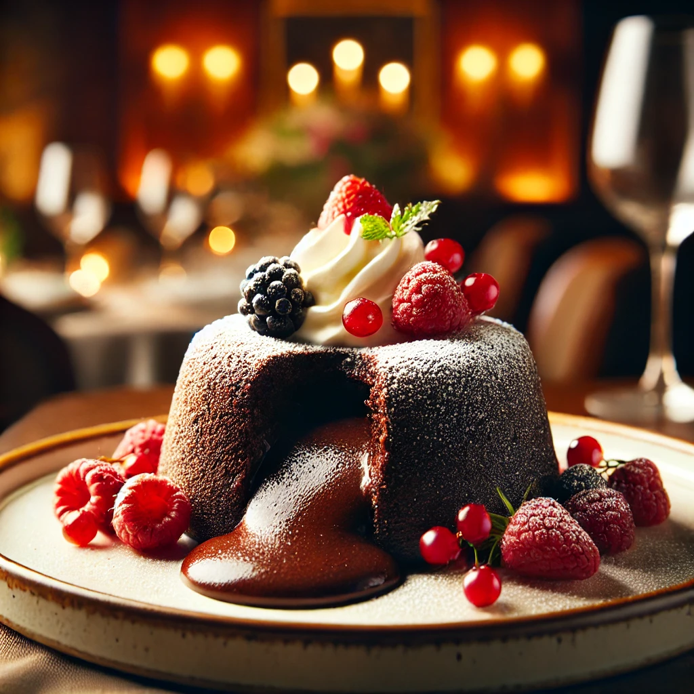

Chocolate Lava Cake
Indulge in the rich, gooey center of this delicious chocolate lava cake. Perfect for dessert lovers!

Ingredients
- 1/2 cup unsalted butter
- 1 cup bittersweet chocolate, chopped
- 1/4 cup all-purpose flour
- 1/2 cup powdered sugar
- 2 large eggs
- 2 egg yolks
- 1/2 tsp vanilla extract
- Pinch of salt
Steps
- Preheat oven to 425°F (220°C). Grease and flour 4 ramekins.
- Melt butter and chocolate together until smooth.
- In a separate bowl, whisk flour, sugar, salt, eggs, and vanilla extract.
- Combine with melted chocolate and mix well.
- Pour batter into ramekins and bake for 12-14 minutes.
- Let cool for a minute before inverting onto plates.
- Serve warm and enjoy the gooey center!
Watch the Recipe Video